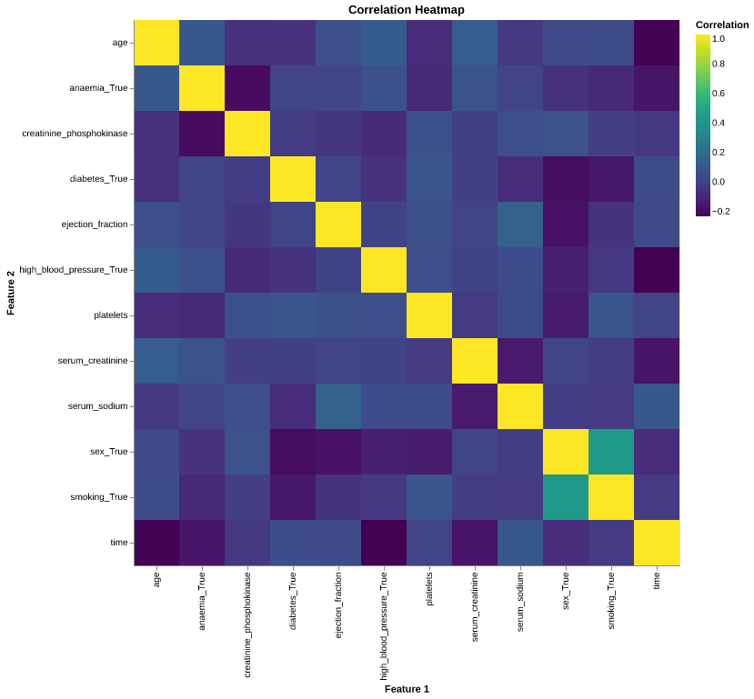
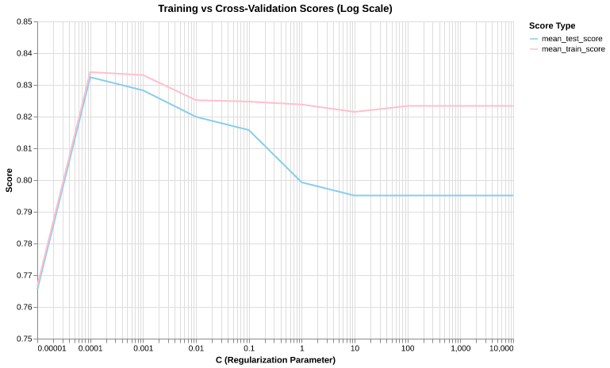

| Column Name | Description | |
|---|---|---|
| 0 | age | Patient's age |
| 1 | anaemia | Decrease of red blood cells or hemoglobin |
| 2 | creatinine_phosphokinase | Level of the CPK enzyme in the blood |
| 3 | diabetes | If the patient has diabetes |
| 4 | ejection_fraction | Percentage of blood leaving the heart at each contraction |
| 5 | high_blood_pressure | If the patient has hypertension |
| 6 | platelets | Platelets in the blood |
| 7 | serum_creatinine | Level of serum creatinine in the blood |
| 8 | serum_sodium | Level of serum sodium in the blood |
| 9 | sex | Woman or man |
| 10 | smoking | If the patient smokes or not |
| 11 | time | Follow-up period |
| 12 | DEATH_EVENT | Whether the patient died or not (target variable) |
Heart Failure Survival Analysis
by Merari Santana, Kevin Gao, Gurmehak Kaur, Yuhan Fan
Summary
We built a classification model using the logistic regression algorithm to predict survival outcomes for patients with heart failure. Using patient test results, the final classifier achieves an accuracy of 81.6%. The model’s precision of 70.0% suggests it is moderately conservative in predicting the positive class (death), minimizing false alarms. More importantly, the recall of 73.68% ensures the model identifies the majority of high-risk patients, reducing the likelihood of missing true positive cases, which could have serious consequences. The F1-score of 0.71 reflects a good balance between precision and recall, highlighting the model’s robustness in survival prediction.
From the confusion matrix, the model correctly identified 14 patients who passed away (true positives) and 35 patients who survived (true negatives). However, it also predicted 6 false positives, incorrectly classifying some survivors as deceased, and missed 5 actual cases of death (false negatives). While these errors warrant consideration, the model’s performance demonstrates strong predictive capabilities for both positive and negative outcomes.
Overall, the logistic regression classifier effectively leverages patient test results to support survival prediction, providing a valuable tool to aid clinical decision-making in heart failure management.
Introduction
Cardiovascular diseases are responsible for approximately 17 million deaths globally each year, with heart failure and myocardial infarctions being the leading contributors to this staggering toll (Chicco and Jurman 2020). Electronic medical records from patients with heart failure, collected during follow-up care, provide a wealth of data on symptoms, test results, and clinical outcomes. Leveraging this data, our team applies machine learning algorithms to predict patient survival after heart failure. This approach uncovers critical patterns and insights that might otherwise remain hidden from traditional clinical assessments, offering valuable tools to support medical decision-making and improve patient outcomes.
Data
We analyzed a dataset containing the medical records of 299 heart failure patients (Dua and Graff 2017). The patients consisted of 105 women and 194 men, and their ages range between 40 and 95 years old. The dataset contains 13 features shown in Table 1, which report clinical, body, and lifestyle information (“Heart Failure Clinical Records [Dataset]” 2020). The death event was used as the target variable in our binary classification study. It states whether the patient died or survived before the end of the follow-up period, which lasted 130 days on average. Our dataset has a class imbalance where the number of survived patients (death event = 0) is 203 (67.89%) and the number of dead patients (death event = 1) is 96 (32.11%).
EDA and Visualizations

| Column | Missing Values | |
|---|---|---|
| 0 | age | 0 |
| 1 | anaemia | 0 |
| 2 | creatinine_phosphokinase | 0 |
| 3 | diabetes | 0 |
| 4 | ejection_fraction | 0 |
| 5 | high_blood_pressure | 0 |
| 6 | platelets | 0 |
| 7 | serum_creatinine | 0 |
| 8 | serum_sodium | 0 |
| 9 | sex | 0 |
| 10 | smoking | 0 |
| 11 | time | 0 |
| 12 | DEATH_EVENT | 0 |
No missing values, no imputation or filling Nulls required
DEATH_EVENT in the heart failure dataset.
| DEATH_EVENT | Count | |
|---|---|---|
| 0 | 0 | 203 |
| 1 | 1 | 96 |
- Dataset Size: The dataset is relatively small, with only 300 rows.
- Class Imbalance: The target variable, DEATH_EVENT, has few examples in the “True” class (i.e., the event occurred), which might affect the model’s ability to learn and generalize well. This class imbalance will be taken into consideration during analysis and model evaluation.
Model
We compared Decision Tree, KNN, Logistic Regression, and selected Logistic Regression due to its interpretability, and ability to handle both linear and non-linear relationships between features. Logistic Regression performed better than the other two models as it works well with fewer features and is less prone to overfitting compared to more complex models like Decision Trees or KNN, especially when the data is relatively small.

Logistic Regression
| param_logisticregression__C | mean_test_score | mean_train_score | |
|---|---|---|---|
| 1 | 0.0001 | 0.832428 | 0.834022 |
| 2 | 0.001 | 0.828261 | 0.833096 |
| 3 | 0.01 | 0.819928 | 0.825187 |
| 4 | 0.1 | 0.815761 | 0.824731 |
| 5 | 1.0 | 0.799275 | 0.823807 |
Model is performing well with C = 0.0010 with a high test score, close to train score, indicating that model isn’t overfitting or underfitting
Model Evaluation
Confusion Matrix
| Predicted | 0 | 1 |
|---|---|---|
| Actual | ||
| 0 | 35 | 6 |
| 1 | 5 | 14 |
| Metric | Value | |
|---|---|---|
| 0 | Accuracy | 0.8167 |
| 1 | Precision | 0.7000 |
| 2 | Recall | 0.7368 |
| 3 | F1 Score | 0.7179 |
Results and Conculsion
The analysis revealed that platelets and ejection_fraction are the most important features in predicting the risk of patient mortality. These features significantly impact the model’s ability to assess patient risk, which is crucial for early intervention. Our model achieved a recall score of 0.73, see Table 5 which is a good start, but there is room for improvement, particularly in reducing the number of high risk patients the model might miss, i.e., maximising recall by minimising False Negatives.
The main challenges in this project stem from class imbalance and limited data availability. With more diverse and comprehensive datasets, performance could be further enhanced. We would also like to explore other machine learning models to improve the overall accuracy.
In conclusion, while the current model shows potential, there is significant opportunity to enhance its effectiveness. With improvements in data quality and model optimization, this tool could become a crucial asset in predicting patient risk and saving lives.
References
Chicco, D., and G. Jurman. 2020. “Machine Learning Can Predict Survival of Patients with Heart Failure from Serum Creatinine and Ejection Fraction Alone.” BMC Medical Informatics and Decision Making 20 (16). https://doi.org/10.1186/s12911-020-1023-5.
Dua, Dheeru, and Casey Graff. 2017. “UCI Machine Learning Repository.” University of California, Irvine, School of Information; Computer Sciences. http://archive.ics.uci.edu/ml.
“Heart Failure Clinical Records [Dataset].” 2020. UCI Machine Learning Repository. https://doi.org/10.24432/C5Z89R.